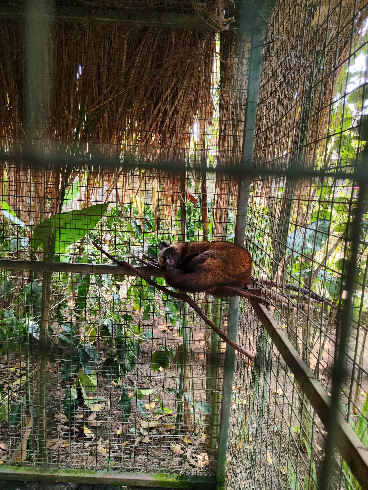
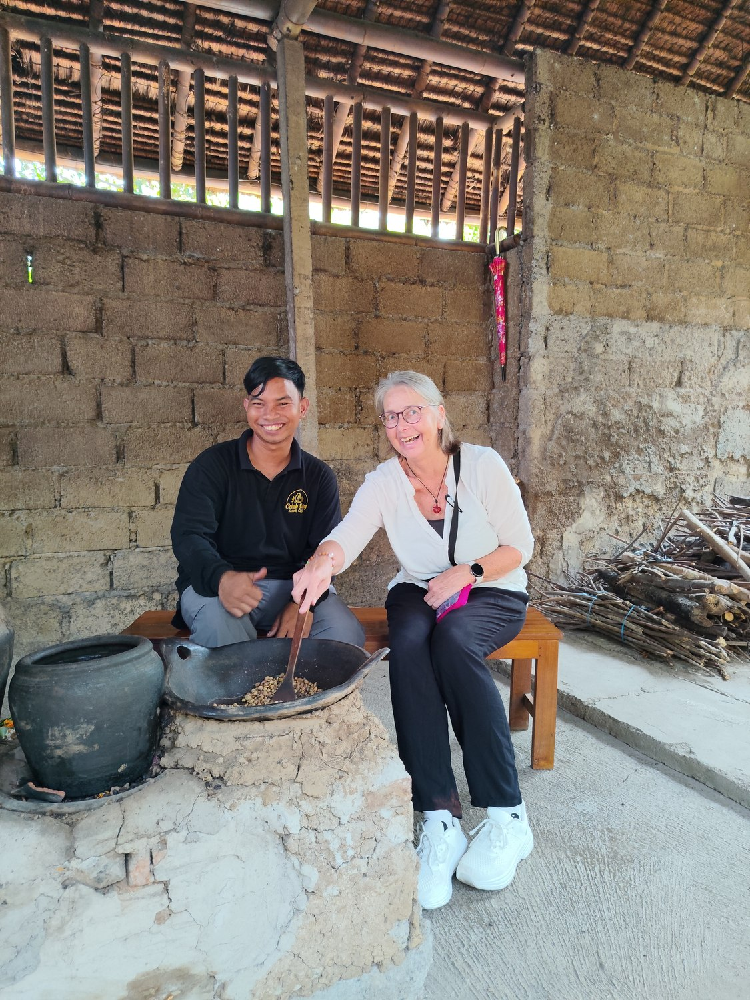
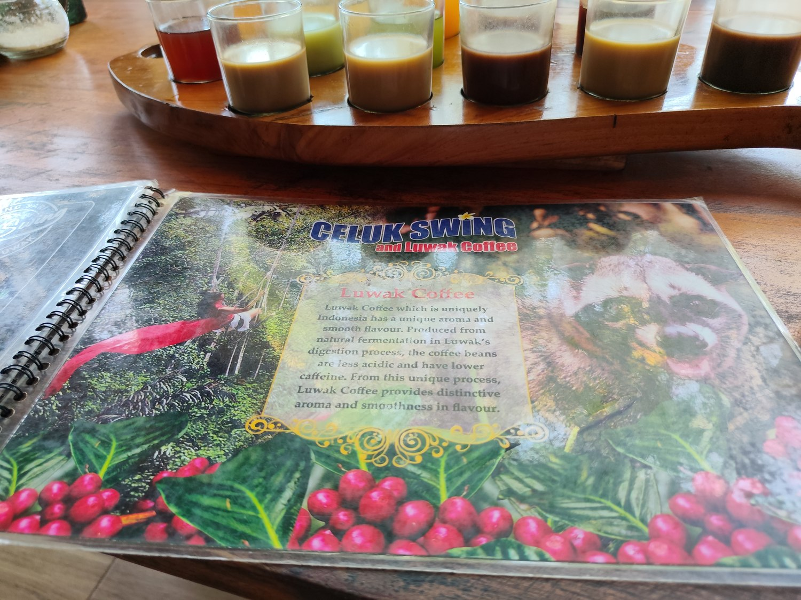
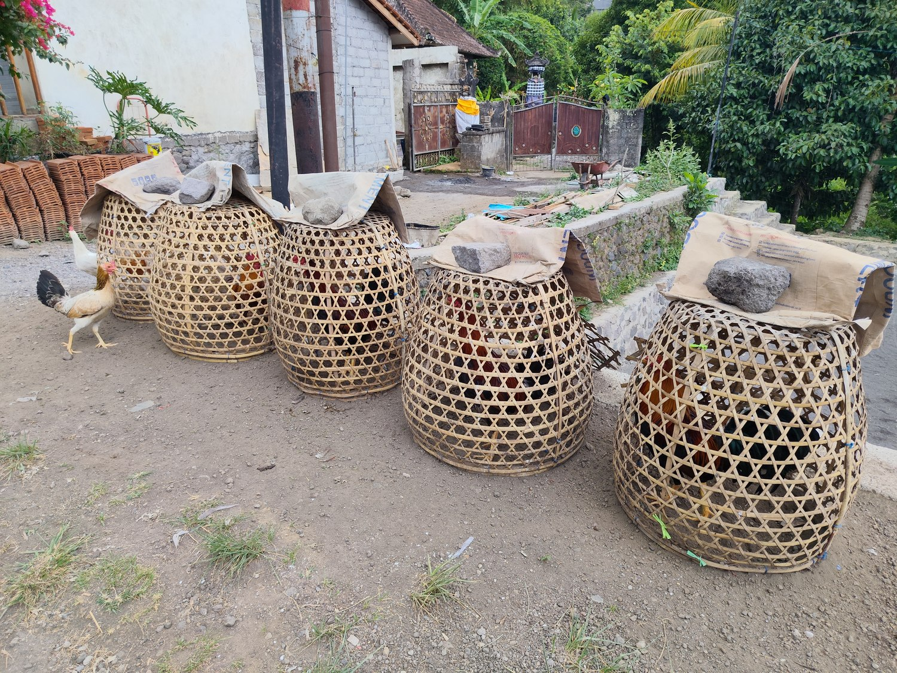
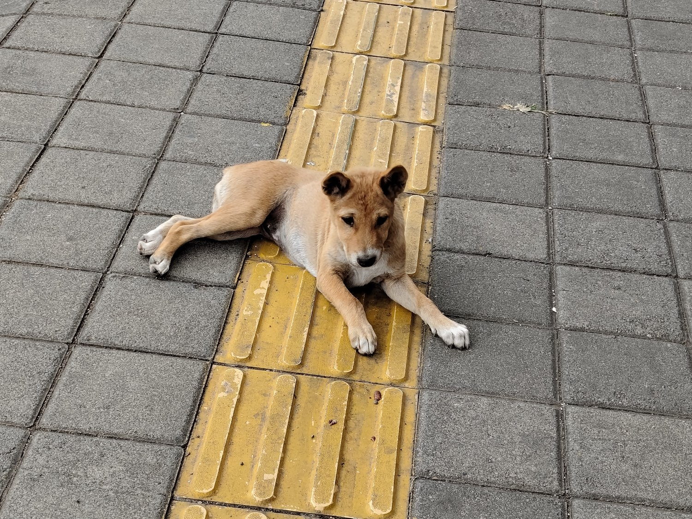

Die Insel der Götter – und voller Alltags-Rätsel. Keine Sehenswürdigkeiten, keine Tipps: nur Dinge, die mir auf Bali auffielen und eine neugierige Frage auslösten, der ich dann nachgegangen bin. Den Anfang machen eine berühmte Kaffeebohne mit ungewöhnlichem Weg und ein einzelner Hahn am Straßenrand. ☕🐓
Warum ist der teuerste Kaffee der Welt durch eine Schleichkatze gegangen?

Die „Kaffee-Produzentin": eine Luwak (Fleckenmusang) im Gehege der Plantage – ein Anblick, der nachdenklich macht.
Auf meiner ersten Kaffeeplantage auf Bali durfte ich Bohnen über dem Feuer rösten und eine ganze Reihe winziger Gläser verkosten. In einem davon: der berühmte Luwak-Kaffee, der teuerste Kaffee der Welt. Sein Geheimnis ist … sagen wir: speziell.
Der Luwak ist kein Ort und keine Marke, sondern ein Tier: die Fleckenmusang, eine kleine Schleichkatze. Mit feiner Nase frisst sie nur die reifsten Kaffeekirschen. Das Fruchtfleisch verdaut sie, die harten Bohnen nicht – die wandern durch ihren Verdauungstrakt, wo Enzyme ihnen einen Teil der Bitterstoffe nehmen, und kommen am anderen Ende wieder heraus. Dort werden sie eingesammelt, gründlich gewaschen, getrocknet und geröstet. Das Ergebnis: ein besonders milder, säurearmer Kaffee.
Die Luwak selbst ist ein scheues, nachtaktives Tier, das eigentlich in den Baumkronen lebt und sich von reifen Früchten ernährt. Dass ausgerechnet dieser kleine, verschlafene Waldbewohner zur Galionsfigur eines weltweiten Luxusprodukts wurde, hat durchaus etwas Absurdes – und sagt am Ende vielleicht mehr über uns Menschen aus als über das Tier.

Auf der Plantage durfte ich selbst rösten – über offenem Feuer, von Hand gewendet.
Und warum ist er so teuer? Weil er selten und mühsam ist: Man kann ihn nicht ernten, man muss ihn … auflesen. Als teuerster Kaffee der Welt erzielt er schwindelerregende Preise – je nach Herkunft von rund hundert bis mehreren hundert Euro pro Kilo, für „wild" gesammelte Bohnen sogar noch weit mehr.
Am schönsten finde ich die Entstehungsgeschichte: Sie beginnt in der Kolonialzeit. Die Niederländer legten im 19. Jahrhundert riesige Kaffeeplantagen in Indonesien an – und verboten den einheimischen Bauern, sich von den eigenen Bohnen auch nur eine Tasse abzuzweigen. Die fanden einen Ausweg: Zwischen den Sträuchern lagen die von der Luwak ausgeschiedenen Bohnen – und die „gehörten" niemandem. Die Bauern sammelten sie, wuschen sie, rösteten sie – und stellten verblüfft fest, dass dieser „Resten-Kaffee" besonders gut schmeckte. So wurde aus der Not der ärmsten Arbeiter der teuerste Kaffee der Welt. Aus der kuriosen Entdeckung ist längst ein weltweites Geschäft geworden – mit allem, was Ruhm und Geld aus einer guten Geschichte machen: im Schönen wie im Fragwürdigen.

Die Verkostung: eine ganze Reihe kleiner Gläser – darunter der berühmte Luwak-Kaffee.
Und wie schmeckt er nun? Tatsächlich auffallend weich und rund, fast ein wenig schokoladig, ohne die übliche Säurespitze. Interessant – aber, ehrlich gesagt, kein Geschmackswunder, für das ich den Rest meines Lebens sparen müsste. 😊
Und doch bleibt mir der Kaffee ein wenig im Hals stecken. Denn der Ruhm hat eine dunkle Seite: Beim ursprünglichen, wilden Luwak-Kaffee sucht sich das Tier seine Kirschen frei im Wald. Die Nachfrage aber hat ganze Farmen entstehen lassen, in denen Schleichkatzen in engen Käfigen gehalten und mit Kaffeekirschen vollgestopft werden – Enge, Stress, einseitige Kost. Kritiker bemängeln zudem, dass viel als „wild" verkaufter Luwak-Kaffee in Wahrheit von solchen Käfigtieren stammt. Ich habe auf der Plantage selbst eine Schleichkatze im Gehege gesehen – und das hat meine Freude am Exotischen gründlich relativiert.
Muss man das probiert haben? Ich bin froh, es einmal verstanden zu haben – und ebenso froh, dass ich jetzt genau weiß, was hinter dem schönen Wort „der teuerste Kaffee der Welt" steckt.
Der teuerste Kaffee der Welt verdankt seinen Ruhm einem Tier, das die Bohnen erst einmal … wieder ausscheidet. Wer hätte das gedacht?
🐓 Die Hähne
Warum sitzt an Balis Straßenrand überall ein einzelner Hahn unter einem Korb?

Am Straßenrand in Sidemen: unter jedem Bambuskorb ein einzelner, prächtiger Hahn.
Auf meinem ersten Spaziergang durch Sidemen fiel es mir überall auf: Vor den Häusern, an Mauern, am Straßenrand stehen geflochtene Bambuskörbe, umgestülpt wie kleine Glocken. Und unter jedem sitzt – würdevoll und für sich – ein Hahn. Nicht zwei, nicht eine ganze Hühnerschar. Immer ein einzelner, prächtiger Hahn. Warum nur?
Die harmlose Antwort zuerst: Die Körbe heißen kurungan, und die Männer stellen ihre liebsten Hähne darunter an den Weg, damit sie Sonne, Luft und vor allem das Leben der Straße abbekommen – Menschen, Mopeds, andere Hähne in sicherer Entfernung. Ein Hahn, der viel sieht, bleibt ruhig und selbstbewusst. Getrennt gehalten werden sie, damit sie sich nicht gegenseitig verletzen. Und das tägliche Umsetzen, Füttern und Streicheln ist für balinesische Männer ein geliebtes Ritual – ein bisschen Hobby, ein bisschen Stolz, ein bisschen Gesellschaft.
Morgens ist das Dorf voll von ihrem Krähen, und immer wieder sieht man Männer, die ihren Hahn behutsam aus dem Korb heben, ihn wiegen, sein Gefieder glätten und ihm gut zureden wie einem Sportler vor dem Wettkampf. Man kennt die Tiere, man vergleicht sie, man ist stolz auf sie – das Umsetzen der Körbe wird so zum kleinen gesellschaftlichen Treffen am Wegrand.
Nur: Das sind keine Hühner für den Kochtopf. Viele dieser Tiere werden über Jahre gehegt und verwöhnt – denn sie sind Kampfhähne. Und damit beginnt die eigentliche Geschichte hinter den hübschen Körben.
Im balinesischen Hinduismus gibt es einen heiligen rituellen Hahnenkampf: tabuh rah, wörtlich „Blut vergießen". Bevor eine wichtige Tempelzeremonie beginnen darf, muss Blut auf die Erde fließen – als Opfer an die Bhuta Kala, die ruhelosen Geister der Unterwelt. Besänftigt stören sie die heilige Feier nicht. Traditionell genügen drei kurze Kämpfe; mancherorts heißt es, keine große Zeremonie dürfe beginnen, bevor das Blut von mindestens drei Hähnen geflossen ist. Der Brauch ist uralt und fest mit der Religion der Insel verwoben.
Doch neben dem heiligen Ritual wuchs sein weltlicher Zwilling: tajen, der Hahnenkampf mit Wetteinsatz. Männer drängen sich im Kreis, Geld wechselt die Hand, die Stimmung kocht. Und hier wird es heikel: Glücksspiel ist in Indonesien gesetzlich verboten – tajen ist damit offiziell illegal. In der Praxis herrscht ein stiller Burgfriede: das Rituelle wird geduldet, das Wetten geflissentlich übersehen. 2025 wurde auf Bali sogar diskutiert, den Hahnenkampf als „kulturelle Attraktion" (ohne Glücksspiel) einzustufen – und ob man tajen nicht lieber ganz legalisieren sollte.
Für Außenstehende ist das viel auf einmal: Hingabe und Härte, heiliges Opfer und verbotene Wette – alles unter einem hübschen Bambuskorb. Der berühmte Ethnologe Clifford Geertz hat dem balinesischen Hahnenkampf einen ganzen Essay gewidmet („Deep Play", 1973): Für ihn war er ein Spiegel der Gesellschaft selbst – der Hahn eine symbolische Verlängerung von Stolz und Status seines Besitzers. Schon das balinesische Wort für Hahn, sabung, wird im Alltag auch für „Held", „Krieger" oder „Draufgänger" gebraucht – der Mann und sein Hahn sind sprachlich kaum zu trennen. Ich muss die Grausamkeit gegenüber den Tieren nicht gutheißen, um die kulturellen Schichten darunter bemerkenswert zu finden – und wie beim Luwak-Kaffee schaue ich lieber genau hin, als weg.
Ein einzelner Hahn unter einem Korb am Straßenrand – und darunter steckt gleich die halbe balinesische Weltordnung: den Göttern ein Opfer, den Männern ein Stolz, dem Gesetz ein Problem. Wer hätte das gedacht?
🐕 Die Hunde der Straße
Warum gehört der Hund auf Bali der ganzen Straße – und in Seoul nur einer Familie?

Satt, entspannt und mitten auf dem Blindenleitstreifen: einer der freundlicheren Straßenhunde von Sidemen.
In Sidemen liegen sie überall: Hunde am Straßenrand, vor den Tempeln, mitten auf dem Gehweg. Viele sind dünn und struppig, manche sichtlich verwahrlost. Dieser hier aber lag satt und seelenruhig genau auf dem gelben Blindenleitstreifen und ließ sich von Mopeds und Menschen kein bisschen stören. Und plötzlich musste ich an Seoul denken – wo der Hund im eigenen Buggy spazieren gefahren wird.
In Korea hatte ich mich gewundert, wie sehr der Hund dort Familienmitglied ist: Hundecafés, winzige Kleidchen, kleine Buggys neben den Kinderwagen (darüber habe ich in der Korea-Reihe geschrieben). Auf Bali ist es fast das Gegenteil. Derselbe beste Freund des Menschen – und doch zwei völlig verschiedene Welten. Wie kann das sein?
Zuerst die Überraschung: Der balinesische Straßenhund ist keine zufällig verwilderte Promenadenmischung, sondern eine der ältesten Hundepopulationen der Welt. Gentests zeigen eine enorme Vielfalt und eine Verwandtschaft mit Chow-Chow, Akita und sogar dem australischen Dingo – ein Hinweis auf sehr alte, ostasiatische Wurzeln. Manche Forscher vermuten, dass es schon Hunde auf Bali gab, bevor die Insel vor Tausenden von Jahren vom Festland getrennt wurde. Der „Bali-Hund" ist also fast ein lebendes Fossil, das frei durch die Dörfer streift.
Und er ist selten wirklich „herrenlos". Die meisten Hunde gehören lose zu einem Haus oder einem Dorf – sie bewachen das Grundstück, fressen die Küchenreste, halten Ratten und Schlangen fern. Viele Balinesen schätzen den Hund vor allem als Wächter. Darüber liegt eine stille, mystische Schicht: Mancherorts glaubt man, Hunde könnten Geister spüren – gute wie böse – und böse Mächte fernhalten; in alten Mythen führen zwei Hunde die Seelen der Verstorbenen ins Totenreich. Für den Alltag darf man das nicht überschätzen (Umfragen zeigen: die meisten sehen schlicht einen Wächter), aber es erklärt, warum der Hund hier dazugehört, ohne je verwöhntes Schoßtier zu sein.
Die Schattenseite ist nicht zu übersehen: Es sind einfach zu viele. Überpopulation, Hunger, Krankheiten. Und 2008 brach auf der Halbinsel Bukit die Tollwut aus und breitete sich über die ganze Insel aus. Die erste Reaktion der Behörden war grausam – Zehntausende Hunde wurden mit vergifteten Ködern getötet. Erst als das kaum half, kam die Wende: Die balinesische Tierschutzorganisation BAWA organisierte ab 2010 eine inselweite Impfkampagne, fing über zweihunderttausend freilaufende Hunde ein und impfte mehr als 70 Prozent – die Schwelle, ab der Tollwut zurückgedrängt wird. Dazu kamen Kastrationen und „Health Days". Langsam wird es besser, aber einfach ist es bis heute nicht.
Und deine Frage, ob hier noch Hundefleisch gegessen wird? Ehrlich: Diesen Handel gab es, versteckt unter dem Kürzel „RW" an manchen Garküchen. 2017 deckte eine Investigation sogar auf, dass ahnungslosen Touristen Hundefleisch als „Hähnchen-Satay" verkauft wurde. Aber: Seit 2023 hat Bali als erste Provinz Indonesiens ein Gesetz mit echten Strafen – Verkauf und Kauf von Hundefleisch sind seither strafbar, mit Haft und hohen Geldbußen. 2024 wurden bei Razzien Hunderte Fleischspieße beschlagnahmt. Verschwunden ist der Handel damit nicht über Nacht, aber er ist verboten und wird verfolgt. Gegessen wird Hundefleisch auf Bali heute also höchstens noch heimlich und illegal – nicht als selbstverständliches Gericht.
Und damit schließt sich der Kreis nach Seoul auf verblüffende Weise: Auch Südkorea hat 2024 beschlossen, den Verzehr von Hundefleisch zu beenden – bis 2027 soll er ganz Geschichte sein. Zwei Orte, die von zwei völlig verschiedenen Enden kommen – vom verwöhnten Familienhund und vom frei streunenden Wächter – und doch auf denselben Punkt zusteuern: der Hund gehört nicht auf den Teller.
Mein Straßenhund auf dem Blindenleitstreifen weiß von alldem nichts. Er hat einen vollen Bauch, einen warmen Stein und die ganze Straße für sich. Kein Buggy, kein Kleidchen – aber auch keine Leine. Vielleicht ist das seine eigene Art von Freiheit.
Derselbe Hund: in Seoul das verwöhnte Familienkind im Buggy, auf Bali der uralte Wächter der Straße – und, wenn man den Geschichten glaubt, sogar der Seelen. Wer hätte das gedacht?